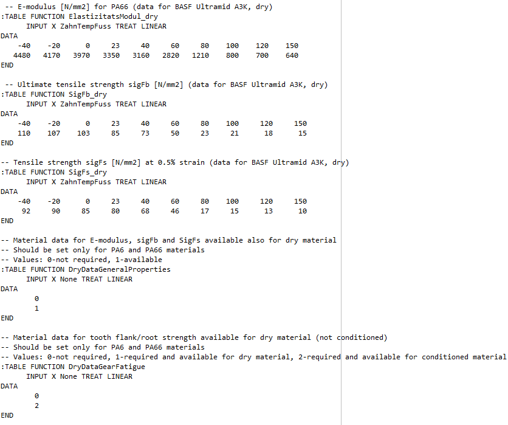

|
|
|


取决于材料组合的属性
摩擦系数、磨损系数和传热系数显著取决于所选材料组合，现在可以在单独的 .dat 文件中定义。与材料有关的属性定义在 kiss/dat 目录中存储的 CoefficientOfFriction.dat、WearFactors.dat 和 HeatTransferCoefficient.dat 文件中。
要启用这些选项，请选择 ，然后选择需要从文件读取材料相关属性的项目。如果选中这些选项，材料配对 .dat 文件中的值将覆盖摩擦系数和磨损系数的值（这些值定义在各个材料 .dat 文件中）。VDI 2736-2 中定义的传热系数值将被 HeatTransferCoefficient.dat 文件中定义的值覆盖。
材料配对属性显示在下图中。
材料配对定义为“材料 ID number_material ID number_”。.dat 文件包含用于以不同方式描述 TABLE FUNCTION 的信息。可以在 中找到材料 ID 编号，位置在 中。该函数也可用于用户定义的材料。

图 15.99：在相应 DAT 文件中定义材料组合的属性
Properties which depend on material combinations
The coefficient of friction, wear coefficients and heat transfer coefficients, which significantly depend on the selected material combination, can now be defined in separate .dat files. The material-dependent properties are defined in the CoefficientOfFriction.dat, WearFactors.dat and HeatTransferCoefficient.dat files, stored in the kiss/dat directory.
To enable these options, select and select the properties for which material-dependent properties should be read from a file. If the options are selected, the values for the coefficients of friction and the wear coefficient (defined in the individual material .dat files) will be overwritten by the values in the material pairing .dat files. The values defined for the heat transfer coefficient in VDI 2736-2 will be overwritten by the values defined in the HeatTransferCoefficient.dat file.
The properties for material pairings are displayed in the figure below.
Material pairings are defined as "material ID number_material ID number_". A .dat file contains information used to describe a TABLE FUNCTION in different ways. You will find the material ID number in the in the . The function can also be used for user-defined materials.
Figure 15.99: Defining the properties for material combinations in the appropriate DAT file